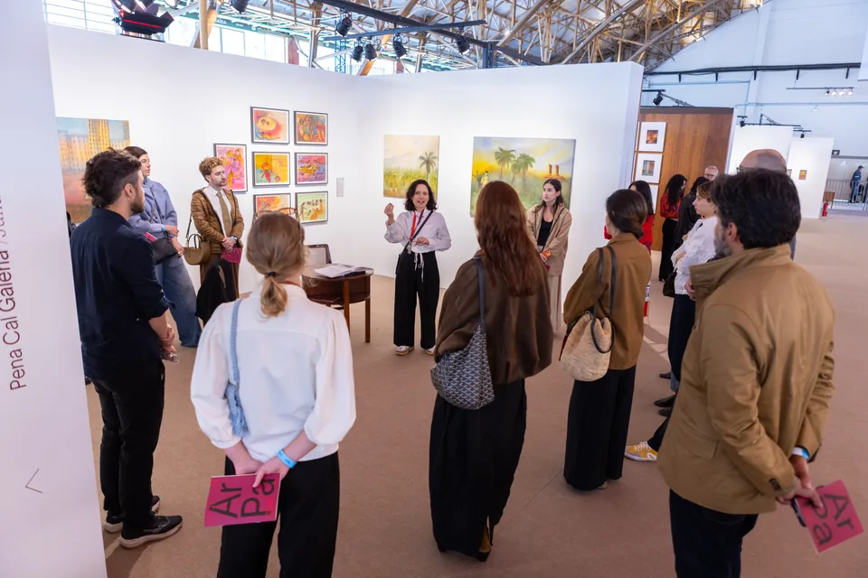

01 / 05
Principal
Reúne um grupo relevante e diverso de galerias, as quais contribuem de maneira construtiva e ativa para a comunidade artística.

São Paulo · América Latina · Desde 2022
Desde 2022, a ArPa aproxima galerias, artistas, colecionadores, instituições e novos públicos por meio de uma feira curada, acolhedora, em profundidade e conectada à América Latina.
Conheça a ArPaUma feira para olhar com tempo. A ArPa nasceu para propor uma nova experiência de feira, mais atenta e menos ansiosa, proporcionando encontros de maior qualidade.
Em uma escala cuidadosamente pensada, cada projeto ganha contexto, cada artista pode ser visto em profundidade e o público circula por pequenas exposições dentro da feira.
Fundada em 2022 por Camilla Barella, a partir de uma demanda do setor por uma nova referência relevante em São Paulo.
“A abordagem curatorial cria um ambiente mais atento ao diálogo entre obras, pesquisas, artistas e diferentes públicos.”
Camilla Barella · fundadora e diretora da ArPa

A seleção, a expografia e o tempo de permanência são partes do mesmo projeto institucional.
Galerias escolhidas pela direção com apoio de um comitê de conteúdo.
Propostas concebidas especialmente para cada edição e para o contexto da feira.
Número limitado de artistas por estande para preservar profundidade, diálogo e fruição.
Resultados 2026
Uma edição de escala inédita. Fonte: balanço institucional da edição 2026.
Cinco perspectivas complementares constroem uma feira plural, conectando mercado, pesquisa, formação e acesso.
Reúne um grupo relevante e diverso de galerias, as quais contribuem de maneira construtiva e ativa para a comunidade artística.

Dedicado a estandes solo de artistas da cena contemporânea, e conta com a colaboração de um curador convidado a cada ano.

Projetos expositivos e conversas ao vivo conectam prática artística, pedagogia e construção de comunidade.

Editoras e publicações especializadas fazem do livro um espaço de circulação e pensamento crítico.

Museus e organizações apresentam iniciativas de pesquisa, memória, formação e acesso à arte.
A ArPa fortalece relações no tempo — antes, durante e depois dos dias de feira.
Programa contínuo e anual: visitas a ateliês, coleções privadas e exposições aproximam colecionadores, curadores, artistas e profissionais do circuito ao longo de todo o ano — um dos maiores diferenciais da ArPa.
Visitas temáticas, ações com escolas públicas e oficinas ampliam o acesso e prolongam a experiência.
Comunicação, formação de público e encontros mantêm a rede em movimento durante todo o ano.

A feira transforma visibilidade em continuidade para artistas, galerias, instituições e acervos públicos.
Descentralização
Reconhece artistas fora do eixo Rio–São Paulo e de periferias urbanas, ampliando a visibilidade de diferentes territórios.
Excelência curatorial
Valoriza propostas de destaque pela coerência expográfica, curatorial e intelectual.
Acervo público
Em parceria com o ICCo, incorpora ao museu obras de artistas ainda não representados em sua coleção.
A ArPa escolhe lugares que carregam memória e pertencimento, conectando a cena da arte na América Latina.

Origem
Mercado Livre Arena Pacaembu
A feira anual e sua rede de galerias, instituições e públicos.Programação futura
16–20 de setembro de 2026 · Casa Victoria Ocampo
Uma experiência intimista e curada com cerca de 20 galerias latino-americanas.
07 Parcerias
Depois de cinco edições, a ArPa prepara sua 6ª edição em São Paulo e aprofunda sua presença latino-americana. Marcas podem criar contexto por meio de ativações, conteúdo, programas socioculturais e experiências exclusivas.
Construir uma parceria